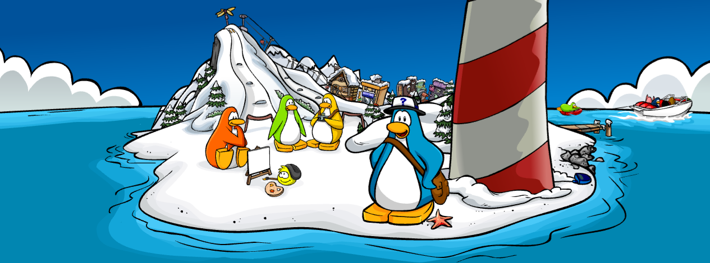
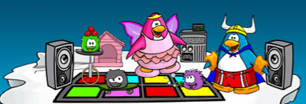
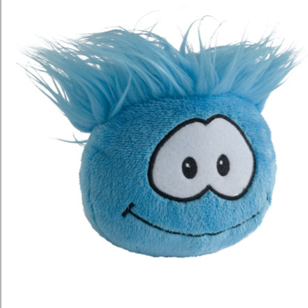
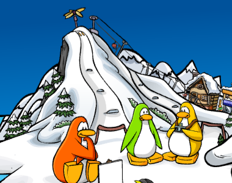
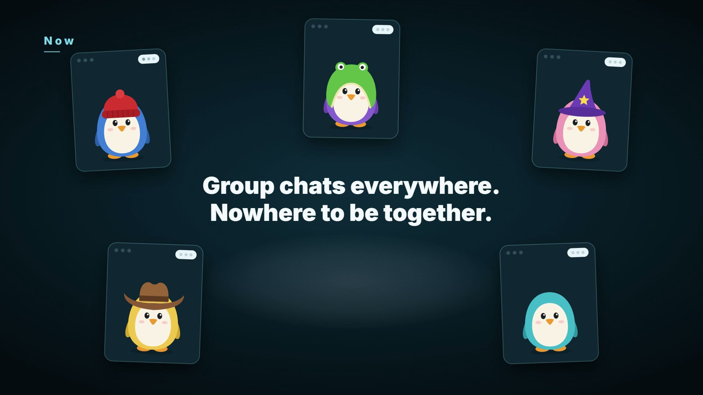
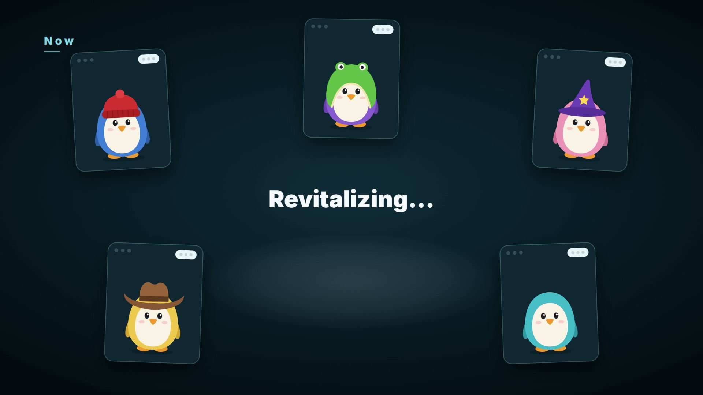
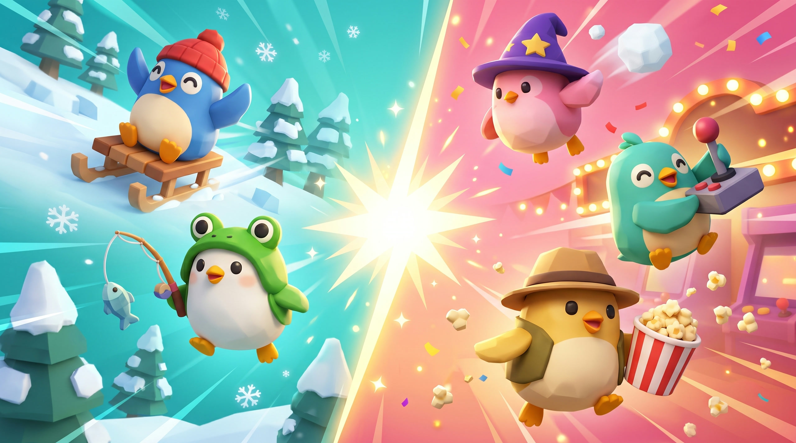
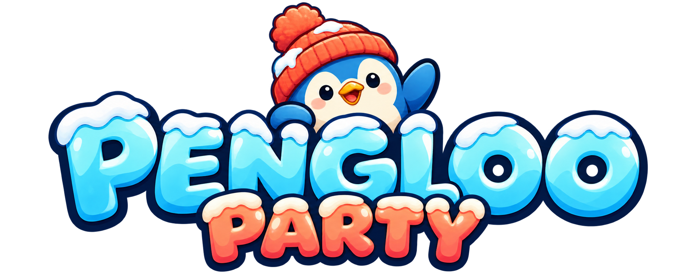
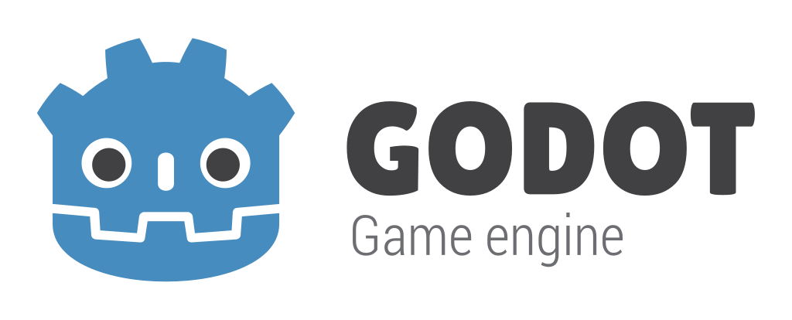
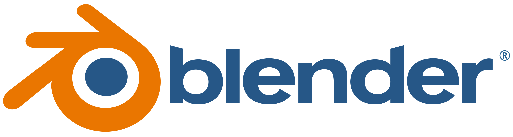

A place to hang out with your friends again. MRUHacks 2026, theme: Revitalize.






pitch/assets/trailer.mp4


pitch/assets/feat-walk.mp4
Click and your penguin finds the way. Start in your own igloo.
pitch/assets/feat-multiplayer.mp4
See your friends' penguins live and talk with proximity voice chat.
pitch/assets/feat-minigames.mp4
Basketball, sled races and movie night in the cinema.
Our first time building a 3D game with


Switching to the game.